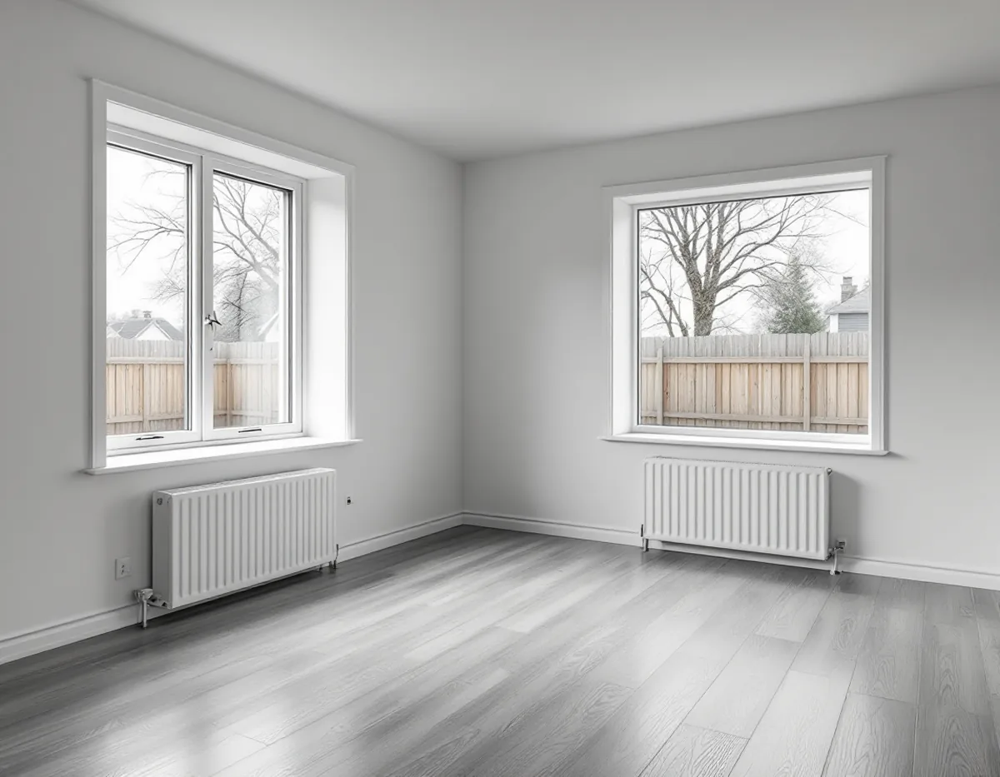
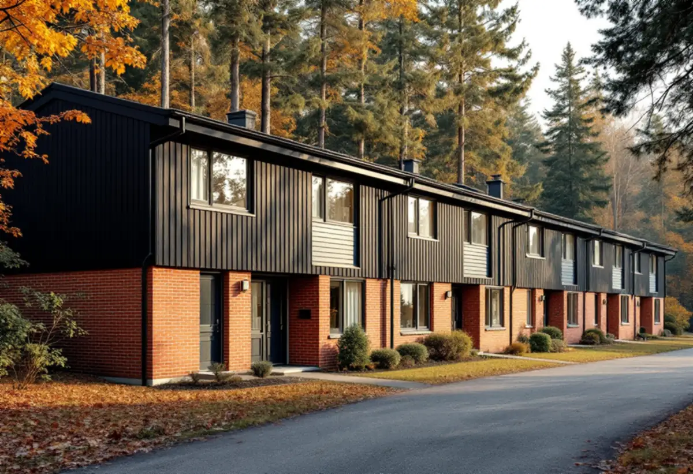

Platsbesök
Vi går igenom rummen och frågar om tidigare radonmätningar och renoveringar.
När ett golv mot mark öppnas syns grunden för första gången på länge. I Upplands Väsby, där stora delar av marken räknas som högriskområde för radon, är det ett bra tillfälle att tänka på mer än själva golvet. Geal Entreprenad AB lägger nya golv och slipar gamla i hela kommunen, med gratis platsbesök och skriftligt kostnadsförslag.

SCB räknade 7 053 bostäder i småhus i Upplands Väsby 2024. Kommunens kunskapsunderlag för kulturmiljö beskriver hur de östra kommundelarna växte fram med en stor andel småhus och radhus under 1960- och 70-talen. Husen ligger i separata grupper längs säckgator, och varje grupp av atriumhus, radhus eller kedjehus är enhetligt utförd. Exempel är Sjukyrkoberget, Skälby, Fresta och Odenslunda.
Underlaget beskriver husen som rationella, i en till två våningar eller i två våningar i suterräng. I ett suterränghus ligger nedre planet delvis mot mark, och där är golvet det som först påverkas av fukt och radon från marken. Ett golvbyte i det planet planerar vi därför annorlunda än i ett rum på övervåningen.

Upplands Väsby kommun skriver att det finns stora områden i kommunen som ses som högriskområde för radon i marken, och att det i kommunen finns berggrund med hög halt av uran. Radon från marken kan komma in i huset beroende på markens radonhalt och genomsläpplighet, otätheter i grunden eller källarväggarna och undertryck inomhus.
Kommunen råder den som har radon från marken att börja med att täta mot marken och se över ventilationen, och påpekar att alla åtgärder mot radon måste utföras fackmannamässigt och gärna med hjälp av en radonexpert. När ett golv på platta ändå ska öppnas för ett nytt golv är det rätt tillfälle att låta någon som kan radon titta på grunden, innan det nya golvet stänger igen den.
Mätsäsongen är 1 oktober till 30 april. Kommunen anger att en långtidsmätning ska pågå i minst 60 dagar i följd, och att den därför måste starta senast i slutet av februari. Det krävs minst två dosor och minst en på varje våning med bostadsrum. En korttidsmätning i minst sju dagar kan användas som vägledning, till exempel efter en åtgärd, men ger inget årsmedelvärde.
Strålsäkerhetsmyndigheten rekommenderar enligt kommunen en ny mätning om det har gått mer än tio år, eller om det har gjorts byggnadsåtgärder som kan påverka radonhalten. Kommunen vill gärna ta del av mätprotokollet. Planerar du ett golvbyte i nedre planet kan det vara värt att mäta under vintern före och vintern efter.
Kommunen skriver att blåbetong, ett byggmaterial av alunskiffer, innehåller radium och ger ifrån sig radon. Den kan finnas i källarväggar, ytterväggar och innerväggar, och ibland även i bjälklag. Gammamätning är enligt kommunen det bästa och enklaste sättet att ta reda på om huset är byggt med blåbetong.
Kommer radonet bara från byggmaterialet kan bättre ventilation vara lösningen, enligt kommunen. För golvet betyder det att det inte hjälper att täta golvet om källan sitter i väggen. Därför är det bra att veta varifrån radonet kommer innan golvet och underlaget väljs.
Väsby villastad uppstod när industrin växte i början av 1900-talet. En stadsplan togs fram 1910 för ett stort markområde som hörde till Vilunda herrgård, men den genomfördes bara i delar. Typiskt för den ursprungliga bebyggelsen är faluröda villor från tiden kring 1900 och 1910 i nationalromantisk stil, med träfasader, vita knutar och småspröjsade fönster. Området bedöms som särskilt värdefullt enligt plan- och bygglagen.
I de villorna kan originalgolven finnas kvar under senare mattor. Massiva trägolv kan enligt Golvbranschen slipas om flera gånger så länge träet räcker, och vi mäter tjockleken innan vi slipar. Mer om slipning och golvtyper finns på sidan om golvläggning, och om taken på villorna på sidan om takrenovering i Upplands Väsby.
Vi går igenom rummen och frågar om tidigare radonmätningar och renoveringar.
Vi tittar på hur golvet är byggt och var rör går genom plattan.
Du får ett skriftligt kostnadsförslag med golv, underlag och eventuella förberedelser separat.
Gamla golv tas bort så att grunden kan ses över innan något stängs igen.
Det nya golvet läggs på ett torrt och plant underlag.
Du får råd om skötsel och om när en ny radonmätning kan göras.
Skatteverket godkänner rotavdrag för att slipa och byta golv i ett småhus du äger och bor i. Avdraget är 30 procent av arbetskostnaden, högst 50 000 kr per person och år. Tillsammans med rutavdrag är taket 75 000 kr.
Varken material eller resor ger avdrag. Geal drar avdraget direkt på fakturan.
Golvytan, hur många lager som ska bort och vilket skick underlaget har avgör mest. Rum i nedre plan mot mark kräver ofta mer förarbete. Platsbesöket är gratis och du får ett skriftligt kostnadsförslag.
Parkett, trägolv, klinker och slipning.
Golvläggning i Stockholm →Takbyte, takbesiktning och plåtarbeten.
Takläggare i Upplands Väsby →Bollstanäs, Vilunda och Runby.
Takrenovering i Upplands Väsby →Potten, VA-avgiften och Bollstanäs.
Attefallshus i Upplands Väsby →Radhus, suterräng och samfälld VA.
Badrumsrenovering i Upplands Väsby →Karta, VA och tomtgräns.
Byggföretag i Upplands Väsby →Sekelskiftesvillorna längs Gamla vägen.
Fasadmålning i Upplands Väsby →Radhus från 70-talet och hus från bomässan.
Fasadrenovering i Upplands Väsby →Inflygning, trafik och tystare fönster i Väsby.
Fönsterbyte i Upplands Väsby →Kedjehusens fönster, kulör och beslag.
Fönsterrenovering i Upplands Väsby →Slipa trägolvet i radhuset på platta.
Golvslipning i Upplands Väsby →Radhus, kedjehus och atriumhus.
Köksrenovering i Upplands Väsby →Radhus, kedjehus och villor i Väsby.
Målare i Upplands Väsby →Rännor, stuprör och radhusplåt i Väsby.
Plåtslagare i Upplands Väsby →Altan, plank och förråd vid radhus och kedjehus.
Snickare i Upplands Väsby →Nytt tak, solceller och väderradarn.
Takbyte i Upplands Väsby →Radhusen och plasttapeten.
Tapetsering i Upplands Väsby →Radhus, kedjehus och utpekade områden.
Tillbyggnad i Upplands Väsby →Äldre villor, radhus och varsamhet.
Totalrenovering i Upplands Väsby →